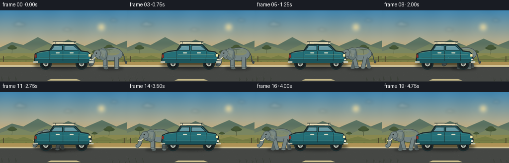
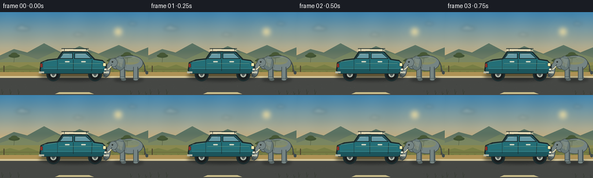

CODING AGENTS AS PIXEL WORLD MODELS
traex/GPT-5.6-Sol · dynamic_spatial_relationship_0065
点击播放 · 原生 RGB 像素
逐轮保存的候选
回放视频、检查图与代码变化。
每份候选均可单独播放。实际图片检查记录在下方工具轨迹中。
候选 01播放与检查图
点击播放 · 原生 RGB 像素


展开代码变化
--- 上一保存版本
+++ 本次保存版本
@@ -0,0 +1,347 @@
+from pathlib import Path
+import math
+import numpy as np
+from PIL import Image, ImageDraw, ImageFilter
+import artifact_io
+
+# PixelWorld: all artwork is procedurally drawn from prompt.txt.
+W, H, N = 256, 144, 20
+S = 4
+WS, HS = W*S, H*S
+ROOT = Path(__file__).resolve().parent
+
+
+def P(x, y=None):
+ if y is None:
+ return tuple(int(round(v*S)) for v in x)
+ return (int(round(x*S)), int(round(y*S)))
+
+
+def pts(seq):
+ return [P(x, y) for x, y in seq]
+
+
+def rgba_layer():
+ return Image.new("RGBA", (WS, HS), (0, 0, 0, 0))
+
+
+def ellipse(d, box, fill, outline=None, width=1):
+ d.ellipse(P(box), fill=fill, outline=outline, width=max(1, int(width*S)))
+
+
+def line(d, xy, fill, width=1, joint="curve"):
+ d.line(pts(xy), fill=fill, width=max(1, int(width*S)), joint=joint)
+
+
+def bezier(p0, p1, p2, p3, steps=20):
+ out = []
+ for t in np.linspace(0, 1, steps):
+ u = 1-t
+ out.append((u**3*p0[0]+3*u*u*t*p1[0]+3*u*t*t*p2[0]+t**3*p3[0],
+ u**3*p0[1]+3*u*u*t*p1[1]+3*u*t*t*p2[1]+t**3*p3[1]))
+ return out
+
+
+def smoothstep(x):
+ x = max(0.0, min(1.0, x))
+ return x*x*(3-2*x)
+
+
+def make_background(frame):
+ # Stable, softly textured golden-hour sky.
+ yy, xx = np.mgrid[0:HS, 0:WS]
+ y = yy / S
+ top = np.array([62, 131, 174], float)
+ hor = np.array([237, 193, 126], float)
+ t = np.clip(y / 93.0, 0, 1)[..., None]
+ arr = top*(1-t) + hor*t
+ # Fine deterministic painted texture, fixed over time.
+ texture = (1.35*np.sin(xx/37.0) + 0.9*np.sin((xx+yy)/71.0) + 0.55*np.cos(yy/19.0))[..., None]
+ arr = np.clip(arr + texture, 0, 255).astype(np.uint8)
+ img = Image.fromarray(arr, "RGB").convert("RGBA")
+
+ # Sun glow.
+ glow = rgba_layer()
+ gd = ImageDraw.Draw(glow)
+ for r, a in [(30, 3), (22, 5), (15, 8), (8, 30)]:
+ ellipse(gd, (204-r, 34-r, 204+r, 34+r), (255, 231, 169, a))
+ ellipse(gd, (198, 28, 210, 40), (255, 230, 158, 220))
+ glow = glow.filter(ImageFilter.GaussianBlur(4*S))
+ img = Image.alpha_composite(img, glow)
+
+ # Thin drifting clouds, deliberately subdued to keep objects dominant.
+ cloud = rgba_layer(); cd = ImageDraw.Draw(cloud)
+ drift = frame * 0.18
+ for cx, cy, sc in [(39+drift, 28, .8), (135+drift*.7, 39, .55), (229+drift*.4, 20, .5)]:
+ ellipse(cd, (cx-15*sc,cy-3*sc,cx+16*sc,cy+4*sc),(244,238,218,45))
+ ellipse(cd, (cx-8*sc,cy-7*sc,cx+4*sc,cy+3*sc),(248,242,222,38))
+ cloud = cloud.filter(ImageFilter.GaussianBlur(2.6*S))
+ img = Image.alpha_composite(img, cloud)
+
+ d = ImageDraw.Draw(img)
+ # Atmospheric hills.
+ d.polygon(pts([(0,75),(24,64),(47,70),(76,54),(110,72),(137,59),(170,72),(205,57),(234,70),(256,61),(256,102),(0,102)]), fill=(91,115,99,255))
+ d.polygon(pts([(0,83),(34,72),(65,82),(96,68),(132,80),(161,70),(195,84),(226,70),(256,79),(256,107),(0,107)]), fill=(107,128,96,255))
+ # Warm horizon haze.
+ haze = rgba_layer(); hd = ImageDraw.Draw(haze)
+ hd.rectangle(P((0,69,256,100)), fill=(240,183,104,28))
+ haze = haze.filter(ImageFilter.GaussianBlur(5*S))
+ img = Image.alpha_composite(img, haze)
+ d = ImageDraw.Draw(img)
+
+ # Savanna strip.
+ d.rectangle(P((0,87,256,108)), fill=(137,136,78,255))
+ d.polygon(pts([(0,97),(17,92),(33,96),(48,91),(68,98),(88,92),(105,96),(126,91),(145,97),(166,92),(185,96),(208,90),(232,97),(256,92),(256,110),(0,110)]), fill=(118,125,68,255))
+
+ # Acacia silhouettes at distance.
+ for cx, cy, sc in [(24,87,.62),(219,89,.72),(190,91,.38)]:
+ line(d, [(cx,cy),(cx+1,cy-16*sc)], (72,80,53,255), 1.2*sc)
+ line(d, [(cx,cy-10*sc),(cx-7*sc,cy-17*sc)], (72,80,53,255), .7*sc)
+ line(d, [(cx+1,cy-12*sc),(cx+8*sc,cy-18*sc)], (72,80,53,255), .7*sc)
+ ellipse(d, (cx-15*sc,cy-23*sc,cx+16*sc,cy-13*sc),(65,82,51,255))
+ ellipse(d, (cx-9*sc,cy-27*sc,cx+10*sc,cy-16*sc),(70,87,53,255))
+
+ # Grass tufts and fence posts for depth.
+ for i in range(0, 257, 13):
+ h = 2.5 + 1.7*math.sin(i*1.71)
+ col = (87,99,53,255) if i%26 else (101,107,54,255)
+ line(d, [(i,105),(i-1.2,105-h)], col, .65)
+ line(d, [(i,105),(i+1.8,104-h*.7)], col, .55)
+ for x in [6, 249]:
+ d.rectangle(P((x,93,x+1.5,108)), fill=(77,70,47,255))
+ line(d, [(0,99),(256,99)], (91,83,53,110), .5)
+
+ # Road / shoulder, subtly perspective-striped.
+ d.polygon(pts([(0,104),(256,104),(256,144),(0,144)]), fill=(65,68,65,255))
+ d.polygon(pts([(0,104),(256,104),(256,111),(0,111)]), fill=(174,146,85,255))
+ d.rectangle(P((0,111,256,114)), fill=(211,197,152,255))
+ d.rectangle(P((0,115,256,144)), fill=(69,71,68,255))
+ # Road aggregate texture (fixed pattern, no flicker).
+ rng = np.random.default_rng(5065)
+ for _ in range(210):
+ x = float(rng.uniform(0,256)); yv = float(rng.uniform(117,144)); r = float(rng.uniform(.12,.45))
+ c = int(rng.integers(63,82))
+ ellipse(d, (x-r,yv-r*.45,x+r,yv+r*.45),(c,c+1,c,90))
+ # A short center marking at bottom edge.
+ d.polygon(pts([(102,139),(154,139),(162,142),(95,142)]), fill=(203,190,139,150))
+ return img
+
+
+def draw_dust(base, cx, progress, phase, moving):
+ if not moving:
+ return
+ lay = rgba_layer(); d = ImageDraw.Draw(lay)
+ # Dust trails behind feet (to the right, since the elephant walks left).
+ for j in range(6):
+ x = cx + 12 + j*4.5 + 1.2*math.sin(phase+j)
+ y = 116 - (j%3)*1.7
+ r = 1.8 + j*.45
+ ellipse(d, (x-r,y-r*.45,x+r,y+r*.45), (203,177,120,max(8,42-j*5)))
+ lay = lay.filter(ImageFilter.GaussianBlur(1.6*S))
+ base.alpha_composite(lay)
+
+
+def leg_geometry(cx, anchor, phase, yoff, back=False):
+ # Articulated two-segment walking leg.
+ swing = math.sin(phase)
+ lift = max(0.0, math.cos(phase)) * 3.0
+ hip = (cx+anchor, 95+yoff)
+ knee = (cx+anchor + swing*2.7, 106+yoff-lift*.25)
+ foot = (cx+anchor + swing*5.4, 117+yoff-lift)
+ return hip, knee, foot
+
+
+def draw_elephant(base, frame, cx, phase, moving):
+ bob = (-0.75*abs(math.sin(phase))) if moving else 0.0
+ yoff = bob
+ lay = rgba_layer(); d = ImageDraw.Draw(lay)
+
+ # Ground shadow tracks the animal and anchors it to the road.
+ shadow = rgba_layer(); sd = ImageDraw.Draw(shadow)
+ ellipse(sd, (cx-27,113,cx+25,121), (15,18,17,95))
+ shadow = shadow.filter(ImageFilter.GaussianBlur(2.3*S))
+ base.alpha_composite(shadow)
+
+ skin_dark = (88,101,101,255)
+ skin = (117,132,131,255)
+ skin_light = (137,151,149,255)
+ outline = (64,75,76,255)
+
+ # Far pair of legs first.
+ for anchor, ph in [(-10, phase+math.pi), (13, phase)]:
+ hip,knee,foot = leg_geometry(cx,anchor,ph,yoff,True)
+ line(d,[hip,knee,foot],skin_dark,7.0)
+ ellipse(d,(foot[0]-4.0,foot[1]-2.1,foot[0]+4.5,foot[1]+2.0),skin_dark)
+
+ # Tail with a tuft.
+ tailcurve = bezier((cx+20,83+yoff),(cx+29,89+yoff),(cx+25,101+yoff),(cx+31,105+yoff),steps=15)
+ line(d,tailcurve,outline,1.8)
+ ellipse(d,(cx+28,102+yoff,cx+33,108+yoff),outline)
+
+ # Main body with a crisp, readable silhouette.
+ ellipse(d,(cx-20,75+yoff,cx+24,102+yoff),skin,outline,1.1)
+ ellipse(d,(cx-16,77+yoff,cx+18,91+yoff),(132,146,144,90))
+ # Neck bridge.
+ d.polygon(pts([(cx-22,81+yoff),(cx-10,79+yoff),(cx-9,98+yoff),(cx-26,99+yoff)]),fill=skin)
+
+ # Near pair of legs, animated out of phase.
+ for anchor, ph in [(-12, phase), (11, phase+math.pi)]:
+ hip,knee,foot = leg_geometry(cx,anchor,ph,yoff,False)
+ line(d,[hip,knee,foot],outline,8.6)
+ line(d,[hip,knee,foot],skin,6.4)
+ ellipse(d,(foot[0]-4.2,foot[1]-2.2,foot[0]+4.8,foot[1]+2.0),outline)
+ ellipse(d,(foot[0]-3.6,foot[1]-1.7,foot[0]+4.1,foot[1]+1.3),skin)
+ # Pale toenail ticks.
+ for k in range(2):
+ line(d,[(foot[0]-1+k*2.2,foot[1]+.2),(foot[0]-.4+k*2.2,foot[1]+.7)],(181,185,168,180),.55)
+
+ # Head and huge ear; ear gently flaps while walking.
+ flap = (1.2*math.sin(phase*.5)) if moving else 0
+ ellipse(d,(cx-32,79+yoff,cx-13,99+yoff),skin,outline,1.0)
+ d.ellipse(P((cx-25-flap*.2,76+yoff,cx-7+flap,101+yoff)),fill=(102,119,119,255),outline=outline,width=3)
+ d.polygon(pts([(cx-22,79+yoff),(cx-10+flap*.5,82+yoff),(cx-13,96+yoff),(cx-22,91+yoff)]),fill=(126,140,138,220))
+ line(d,[(cx-20,81+yoff),(cx-16,96+yoff)],(76,91,91,135),.6)
+ line(d,[(cx-20,87+yoff),(cx-11,91+yoff)],(76,91,91,110),.55)
+ # Forehead cap gives the head a distinctive elephant profile.
+ ellipse(d,(cx-35,80+yoff,cx-20,95+yoff),skin,outline,.9)
+
+ # Curled, swinging trunk, with rounded line and tip.
+ trunk_swing = (2.2*math.sin(phase*.55)) if moving else 0.0
+ trunk = bezier((cx-33,89+yoff),(cx-38,96+yoff),(cx-34+trunk_swing,108+yoff),(cx-42+trunk_swing,110+yoff),steps=24)
+ line(d,trunk,outline,8.0)
+ line(d,trunk,skin,5.8)
+ tip=(trunk[-1][0],trunk[-1][1])
+ ellipse(d,(tip[0]-3,tip[1]-3,tip[0]+3,tip[1]+3),skin)
+ # Small upward hook at the very tip.
+ line(d,[(tip[0],tip[1]),(tip[0]-2.5,tip[1]-3.5)],outline,2.0)
+ line(d,[(tip[0],tip[1]-1),(tip[0]-2.3,tip[1]-3.5)],skin_light,1.1)
+
+ # Tusk and eye remain visible at tiny resolution.
+ tusk = bezier((cx-31,94+yoff),(cx-35,99+yoff),(cx-38,101+yoff),(cx-41,98+yoff),steps=12)
+ line(d,tusk,(246,229,185,255),1.65)
+ ellipse(d,(cx-30.2,85.1+yoff,cx-27.7,87.6+yoff),(28,34,34,255))
+ ellipse(d,(cx-29.6,85.25+yoff,cx-29.0,85.85+yoff),(233,225,192,255))
+ # Ear rim and body wrinkles/highlights.
+ line(d,[(cx-7+flap,80+yoff),(cx-6+flap,96+yoff)],(67,80,81,180),.65)
+ for xo in [-3,4,12]:
+ line(d,[(cx+xo,82+yoff),(cx+xo+3,83+yoff)],(72,87,87,100),.55)
+ line(d,[(cx-17,77.8+yoff),(cx+10,77.8+yoff)],skin_light,.75)
+
+ base.alpha_composite(lay)
+
+
+def draw_car(base, frame):
+ # The parked car faces RIGHT: sloped windshield, long hood, bright front lamp.
+ shadow = rgba_layer(); sd = ImageDraw.Draw(shadow)
+ ellipse(sd,(67,103,188,119),(14,17,17,130))
+ shadow = shadow.filter(ImageFilter.GaussianBlur(2.8*S))
+ base.alpha_composite(shadow)
+
+ lay = rgba_layer(); d = ImageDraw.Draw(lay)
+ outline=(28,43,45,255)
+ tire=(25,29,30,255)
+ teal=(36,111,119,255)
+ teal_dark=(27,84,91,255)
+ teal_light=(64,143,147,255)
+ cream=(230,218,181,255)
+
+ # Wheels behind body.
+ for wx in [92,164]:
+ ellipse(d,(wx-12,96,wx+12,120),outline)
+ ellipse(d,(wx-9.2,98.8,wx+9.2,117.2),tire)
+ ellipse(d,(wx-5.6,102.4,wx+5.6,113.6),(180,184,171,255),outline,.7)
+ ellipse(d,(wx-2.5,105.5,wx+2.5,110.5),(67,76,75,255))
+ for a in range(0,360,90):
+ r=4.5; x2=wx+math.cos(math.radians(a))*r; y2=108+math.sin(math.radians(a))*r
+ line(d,[(wx,108),(x2,y2)],(93,105,102,255),.65)
+ ellipse(d,(wx-8.2,99.7,wx-4.0,102.0),(255,255,245,45))
+
+ # Body shell: squared rear (left), long hood and bumper (right).
+ body=[(70,87),(82,82),(99,80),(107,68),(151,68),(164,81),(177,83),(184,90),(184,101),(178,107),(72,107),(68,101)]
+ d.polygon(pts(body),fill=outline)
+ inset=[(72,88),(84,84),(101,82),(109,70),(150,70),(162,83),(176,85),(181,91),(181,100),(175,104),(74,104),(71,100)]
+ d.polygon(pts(inset),fill=teal)
+ # Lower rocker panel.
+ d.polygon(pts([(72,98),(181,98),(181,102),(175,106),(74,106),(70,101)]),fill=teal_dark)
+ line(d,[(75,98),(178,98)],teal_light,.8)
+
+ # Roof and rack.
+ d.polygon(pts([(104,67),(110,64.5),(148,64.5),(154,68)]),fill=cream)
+ line(d,[(106,63),(153,63)],outline,1.2)
+ line(d,[(111,63),(111,67)],outline,.9)
+ line(d,[(149,63),(149,67)],outline,.9)
+
+ # Windows; front windshield slope makes direction explicit.
+ glass=(101,153,164,255)
+ glass_hi=(170,204,203,180)
+ d.polygon(pts([(109,71),(126,71),(126,81),(102,81)]),fill=outline)
+ d.polygon(pts([(110,72),(124.5,72),(124.5,79.7),(104,79.7)]),fill=glass)
+ d.polygon(pts([(128,71),(149,71),(159,81),(128,81)]),fill=outline)
+ d.polygon(pts([(129.5,72),(148,72),(156.5,79.7),(129.5,79.7)]),fill=glass)
+ line(d,[(108,73),(119,73)],glass_hi,.8)
+ line(d,[(132,73),(147,73)],glass_hi,.8)
+
+ # Doors, handles, and side molding.
+ line(d,[(126.5,82),(126.5,102)],outline,.75)
+ line(d,[(159,83),(158,102)],outline,.75)
+ line(d,[(99,83),(99,101)],outline,.65)
+ line(d,[(102,89),(174,89)],(112,173,171,150),.65)
+ d.rounded_rectangle(P((112,85,120,87)),radius=1*S,fill=(214,217,196,255))
+ d.rounded_rectangle(P((140,85,148,87)),radius=1*S,fill=(214,217,196,255))
+
+ # Hood ridge, front grille/headlamp (RIGHT), rear red tail lamp (LEFT).
+ line(d,[(160,84),(177,86),(181,91)],teal_light,1.0)
+ d.rectangle(P((177.5,88,183,94)),fill=(226,221,166,255),outline=outline,width=2)
+ ellipse(d,(179,89,182.6,92.6),(255,239,174,255))
+ d.rectangle(P((181,96,185,101)),fill=(38,48,48,255))
+ for yy in [97,99]: line(d,[(181.5,yy),(184.5,yy)],(159,168,155,255),.45)
+ d.rectangle(P((69.3,89,73.7,96)),fill=(139,49,40,255),outline=outline,width=2)
+ d.rectangle(P((67,103,76,106)),fill=(178,183,165,255))
+ d.rectangle(P((179,103,188,106)),fill=(194,197,177,255))
+ # Tiny license plate shape, no legibility-dependent text.
+ d.rectangle(P((180,98,184,101)),fill=(224,224,202,255))
+ # Paint glints.
+ line(d,[(76,86),(97,83)],(128,185,179,140),.75)
+ line(d,[(80,95),(172,95)],(27,81,87,180),.6)
+ base.alpha_composite(lay)
+
+
+def draw_foreground_grass(base, frame):
+ d=ImageDraw.Draw(base)
+ # Sparse foreground blades, moving very slightly in wind.
+ sway=.5*math.sin(frame*.25)
+ for x in [4,18,32,226,240,252]:
+ h=5+(x%7)
+ line(d,[(x,143),(x-1+sway,143-h)],(47,55,43,180),.7)
+ line(d,[(x,143),(x+2+sway,144-h*.75)],(51,59,44,150),.6)
+
+
+def main():
+ frames=[]
+ for f in range(N):
+ img=make_background(f)
+ # Hold the initial front-of-car relation for one second, walk, then hold at rear.
+ if f <= 3:
+ q=0.0
+ elif f >= 16:
+ q=1.0
+ else:
+ q=smoothstep((f-3)/13.0)
+ cx=223*(1-q)+52*q
+ moving=(f>=4 and f<=16)
+ # About 3.2 strides during the crossing; resting poses stay stable.
+ phase=(q*6.4*math.pi) if moving else (0.0 if q==0 else 6.4*math.pi)
+ draw_dust(img,cx,q,phase,moving)
+ # Elephant is composited before the car, so it visibly passes behind it.
+ draw_elephant(img,f,cx,phase,moving)
+ draw_car(img,f)
+ draw_foreground_grass(img,f)
+ img=img.convert("RGB").resize((W,H),Image.Resampling.LANCZOS)
+ frames.append(np.asarray(img,dtype=np.uint8))
+ arr=np.stack(frames,axis=0)
+ artifact_io.save(arr, ROOT)
+ print(f"saved {arr.shape} {arr.dtype}; RGB range {arr.min()}..{arr.max()}")
+
+
+if __name__ == "__main__":
+ main()
可观测工具轨迹
实际执行的命令与返回图片。
命令 1exit 0
/bin/bash -lc "cat prompt.txt && printf '\\n--- GENERATION_RULES.md ---\\n' && cat GENERATION_RULES.md && printf '\\n--- task_spec.json ---\\n' && cat task_spec.json"
命令 2exit 0
/bin/bash -lc "find . -maxdepth 3 -type f -printf '%p\\n' | sort && printf '\\n--- tools ---\\n' && command -v ffmpeg || true && command -v python3 || true && python3 - <<'PY' mods=['PIL','numpy','cv2','cairo','moviepy'] for m in mods: try: x=__import__(m); print(m,'OK',getattr(x,'__version__','')) except Exception as e: print(m,'NO',type(e).__name__) PY"
命令 3exit 0
/bin/bash -lc 'cat artifact_io.py'
命令 4exit 0
/bin/bash -lc 'find /usr/share/fonts/truetype -type f 2>/dev/null | head -30'
命令 5exit 0
/bin/bash -lc "cat > generate.py <<'PY'
from pathlib import Path
import math
import numpy as np
from PIL import Image, ImageDraw, ImageFilter
import artifact_io
# PixelWorld: all artwork is procedurally drawn from prompt.txt.
W, H, N = 256, 144, 20
S = 4
WS, HS = W*S, H*S
ROOT = Path(__file__).resolve().parent
def P(x, y=None):
if y is None:
return tuple(int(round(v*S)) for v in x)
return (int(round(x*S)), int(round(y*S)))
def pts(seq):
return [P(x, y) for x, y in seq]
def rgba_layer():
return Image.new(\"RGBA\", (WS, HS), (0, 0, 0, 0))
def ellipse(d, box, fill, outline=None, width=1):
d.ellipse(P(box), fill=fill, outline=outline, width=max(1, int(width*S)))
def line(d, xy, fill, width=1, joint=\"curve\"):
d.line(pts(xy), fill=fill, width=max(1, int(width*S)), joint=joint)
def bezier(p0, p1, p2, p3, steps=20):
out = []
for t in np.linspace(0, 1, steps):
u = 1-t
out.append((u**3*p0[0]+3*u*u*t*p1[0]+3*u*t*t*p2[0]+t**3*p3[0],
u**3*p0[1]+3*u*u*t*p1[1]+3*u*t*t*p2[1]+t**3*p3[1]))
return out
def smoothstep(x):
x = max(0.0, min(1.0, x))
return x*x*(3-2*x)
def make_background(frame):
# Stable, softly textured golden-hour sky.
yy, xx = np.mgrid[0:HS, 0:WS]
y = yy / S
top = np.array([62, 131, 174], float)
hor = np.array([237, 193, 126], float)
t = np.clip(y / 93.0, 0, 1)[..., None]
arr = top*(1-t) + hor*t
# Fine deterministic painted texture, fixed over time.
texture = (1.35*np.sin(xx/37.0) + 0.9*np.sin((xx+yy)/71.0) + 0.55*np.cos(yy/19.0))[..., None]
arr = np.clip(arr + texture, 0, 255).astype(np.uint8)
img = Image.fromarray(arr, \"RGB\").convert(\"RGBA\")
# Sun glow.
glow = rgba_layer()
gd = ImageDraw.Draw(glow)
for r, a in [(30, 3), (22, 5), (15, 8), (8, 30)]:
ellipse(gd, (204-r, 34-r, 204+r, 34+r), (255, 231, 169, a))
ellipse(gd, (198, 28, 210, 40), (255, 230, 158, 220))
glow = glow.filter(ImageFilter.GaussianBlur(4*S))
img = Image.alpha_composite(img, glow)
# Thin drifting clouds, deliberately subdued to keep objects dominant.
cloud = rgba_layer(); cd = ImageDraw.Draw(cloud)
drift = frame * 0.18
for cx, cy, sc in [(39+drift, 28, .8), (135+drift*.7, 39, .55), (229+drift*.4, 20, .5)]:
ellipse(cd, (cx-15*sc,cy-3*sc,cx+16*sc,cy+4*sc),(244,238,218,45))
ellipse(cd, (cx-8*sc,cy-7*sc,cx+4*sc,cy+3*sc),(248,242,222,38))
cloud = cloud.filter(ImageFilter.GaussianBlur(2.6*S))
img = Image.alpha_composite(img, cloud)
d = ImageDraw.Draw(img)
# Atmospheric hills.
d.polygon(pts([(0,75),(24,64),(47,70),(76,54),(110,72),(137,59),(170,72),(205,57),(234,70),(256,61),(256,102),(0,102)]), fill=(91,115,99,255))
d.polygon(pts([(0,83),(34,72),(65,82),(96,68),(132,80),(161,70),(195,84),(226,70),(256,79),(256,107),(0,107)]), fill=(107,128,96,255))
# Warm horizon haze.
haze = rgba_layer(); hd = ImageDraw.Draw(haze)
hd.rectangle(P((0,69,256,100)), fill=(240,183,104,28))
haze = haze.filter(ImageFilter.GaussianBlur(5*S))
img = Image.alpha_composite(img, haze)
d = ImageDraw.Draw(img)
# Savanna strip.
d.rectangle(P((0,87,256,108)), fill=(137,136,78,255))
d.polygon(pts([(0,97),(17,92),(33,96),(48,91),(68,98),(88,92),(105,96),(126,91),(145,97),(166,92),(185,96),(208,90),(232,97),(256,92),(256,110),(0,110)]), fill=(118,125,68,255))
# Acacia silhouettes at distance.
for cx, cy, sc in [(24,87,.62),(219,89,.72),(190,91,.38)]:
line(d, [(cx,cy),(cx+1,cy-16*sc)], (72,80,53,255), 1.2*sc)
line(d, [(cx,cy-10*sc),(cx-7*sc,cy-17*sc)], (72,80,53,255), .7*sc)
line(d, [(cx+1,cy-12*sc),(cx+8*sc,cy-18*sc)], (72,80,53,255), .7*sc)
ellipse(d, (cx-15*sc,cy-23*sc,cx+16*sc,cy-13*sc),(65,82,51,255))
ellipse(d, (cx-9*sc,cy-27*sc,cx+10*sc,cy-16*sc),(70,87,53,255))
# Grass tufts and fence posts for depth.
for i in range(0, 257, 13):
h = 2.5 + 1.7*math.sin(i*1.71)
col = (87,99,53,255) if i%26 else (101,107,54,255)
line(d, [(i,105),(i-1.2,105-h)], col, .65)
line(d, [(i,105),(i+1.8,104-h*.7)], col, .55)
for x in [6, 249]:
d.rectangle(P((x,93,x+1.5,108)), fill=(77,70,47,255))
line(d, [(0,99),(256,99)], (91,83,53,110), .5)
# Road / shoulder, subtly perspective-striped.
d.polygon(pts([(0,104),(256,104),(256,144),(0,144)]), fill=(65,68,65,255))
d.polygon(pts([(0,104),(256,104),(256,111),(0,111)]), fill=(174,146,85,255))
d.rectangle(P((0,111,256,114)), fill=(211,197,152,255))
d.rectangle(P((0,115,256,144)), fill=(69,71,68,255))
# Road aggregate texture (fixed pattern, no flicker).
rng = np.random.default_rng(5065)
for _ in range(210):
x = float(rng.uniform(0,256)); yv = float(rng.uniform(117,144)); r = float(rng.uniform(.12,.45))
c = int(rng.integers(63,82))
ellipse(d, (x-r,yv-r*.45,x+r,yv+r*.45),(c,c+1,c,90))
# A short center marking at bottom edge.
d.polygon(pts([(102,139),(154,139),(162,142),(95,142)]), fill=(203,190,139,150))
return img
def draw_dust(base, cx, progress, phase, moving):
if not moving:
return
lay = rgba_layer(); d = ImageDraw.Draw(lay)
# Dust trails behind feet (to the right, since the elephant walks left).
for j in range(6):
x = cx + 12 + j*4.5 + 1.2*math.sin(phase+j)
y = 116 - (j%3)*1.7
r = 1.8 + j*.45
ellipse(d, (x-r,y-r*.45,x+r,y+r*.45), (203,177,120,max(8,42-j*5)))
lay = lay.filter(ImageFilter.GaussianBlur(1.6*S))
base.alpha_composite(lay)
def leg_geometry(cx, anchor, phase, yoff, back=False):
# Articulated two-segment walking leg.
swing = math.sin(phase)
lift = max(0.0, math.cos(phase)) * 3.0
hip = (cx+anchor, 95+yoff)
knee = (cx+anchor + swing*2.7, 106+yoff-lift*.25)
foot = (cx+anchor + swing*5.4, 117+yoff-lift)
return hip, knee, foot
def draw_elephant(base, frame, cx, phase, moving):
bob = (-0.75*abs(math.sin(phase))) if moving else 0.0
yoff = bob
lay = rgba_layer(); d = ImageDraw.Draw(lay)
# Ground shadow tracks the animal and anchors it to the road.
shadow = rgba_layer(); sd = ImageDraw.Draw(shadow)
ellipse(sd, (cx-27,113,cx+25,121), (15,18,17,95))
shadow = shadow.filter(ImageFilter.GaussianBlur(2.3*S))
base.alpha_composite(shadow)
skin_dark = (88,101,101,255)
skin = (117,132,131,255)
skin_light = (137,151,149,255)
outline = (64,75,76,255)
# Far pair of legs first.
for anchor, ph in [(-10, phase+math.pi), (13, phase)]:
hip,knee,foot = leg_geometry(cx,anchor,ph,yoff,True)
line(d,[hip,knee,foot],skin_dark,7.0)
ellipse(d,(foot[0]-4.0,foot[1]-2.1,foot[0]+4.5,foot[1]+2.0),skin_dark)
# Tail with a tuft.
tailcurve = bezier((cx+20,83+yoff),(cx+29,89+yoff),(cx+25,101+yoff),(cx+31,105+yoff),steps=15)
line(d,tailcurve,outline,1.8)
ellipse(d,(cx+28,102+yoff,cx+33,108+yoff),outline)
# Main body with a crisp, readable silhouette.
ellipse(d,(cx-20,75+yoff,cx+24,102+yoff),skin,outline,1.1)
ellipse(d,(cx-16,77+yoff,cx+18,91+yoff),(132,146,144,90))
# Neck bridge.
d.polygon(pts([(cx-22,81+yoff),(cx-10,79+yoff),(cx-9,98+yoff),(cx-26,99+yoff)]),fill=skin)
# Near pair of legs, animated out of phase.
for anchor, ph in [(-12, phase), (11, phase+math.pi)]:
hip,knee,foot = leg_geometry(cx,anchor,ph,yoff,False)
line(d,[hip,knee,foot],outline,8.6)
line(d,[hip,knee,foot],skin,6.4)
ellipse(d,(foot[0]-4.2,foot[1]-2.2,foot[0]+4.8,foot[1]+2.0),outline)
ellipse(d,(foot[0]-3.6,foot[1]-1.7,foot[0]+4.1,foot[1]+1.3),skin)
# Pale toenail ticks.
for k in range(2):
line(d,[(foot[0]-1+k*2.2,foot[1]+.2),(foot[0]-.4+k*2.2,foot[1]+.7)],(181,185,168,180),.55)
# Head and huge ear; ear gently flaps while walking.
flap = (1.2*math.sin(phase*.5)) if moving else 0
ellipse(d,(cx-32,79+yoff,cx-13,99+yoff),skin,outline,1.0)
d.ellipse(P((cx-25-flap*.2,76+yoff,cx-7+flap,101+yoff)),fill=(102,119,119,255),outline=outline,width=3)
d.polygon(pts([(cx-22,79+yoff),(cx-10+flap*.5,82+yoff),(cx-13,96+yoff),(cx-22,91+yoff)]),fill=(126,140,138,220))
line(d,[(cx-20,81+yoff),(cx-16,96+yoff)],(76,91,91,135),.6)
line(d,[(cx-20,87+yoff),(cx-11,91+yoff)],(76,91,91,110),.55)
# Forehead cap gives the head a distinctive elephant profile.
ellipse(d,(cx-35,80+yoff,cx-20,95+yoff),skin,outline,.9)
# Curled, swinging trunk, with rounded line and tip.
trunk_swing = (2.2*math.sin(phase*.55)) if moving else 0.0
trunk = bezier((cx-33,89+yoff),(cx-38,96+yoff),(cx-34+trunk_swing,108+yoff),(cx-42+trunk_swing,110+yoff),steps=24)
line(d,trunk,outline,8.0)
line(d,trunk,skin,5.8)
tip=(trunk[-1][0],trunk[-1][1])
ellipse(d,(tip[0]-3,tip[1]-3,tip[0]+3,tip[1]+3),skin)
# Small upward hook at the very tip.
line(d,[(tip[0],tip[1]),(tip[0]-2.5,tip[1]-3.5)],outline,2.0)
line(d,[(tip[0],tip[1]-1),(tip[0]-2.3,tip[1]-3.5)],skin_light,1.1)
# Tusk and eye remain visible at tiny resolution.
tusk = bezier((cx-31,94+yoff),(cx-35,99+yoff),(cx-38,101+yoff),(cx-41,98+yoff),steps=12)
line(d,tusk,(246,229,185,255),1.65)
ellipse(d,(cx-30.2,85.1+yoff,cx-27.7,87.6+yoff),(28,34,34,255))
ellipse(d,(cx-29.6,85.25+yoff,cx-29.0,85.85+yoff),(233,225,192,255))
# Ear rim and body wrinkles/highlights.
line(d,[(cx-7+flap,80+yoff),(cx-6+flap,96+yoff)],(67,80,81,180),.65)
for xo in [-3,4,12]:
line(d,[(cx+xo,82+yoff),(cx+xo+3,83+yoff)],(72,87,87,100),.55)
line(d,[(cx-17,77.8+yoff),(cx+10,77.8+yoff)],skin_light,.75)
base.alpha_composite(lay)
def draw_car(base, frame):
# The parked car faces RIGHT: sloped windshield, long hood, bright front lamp.
shadow = rgba_layer(); sd = ImageDraw.Draw(shadow)
ellipse(sd,(67,103,188,119),(14,17,17,130))
shadow = shadow.filter(ImageFilter.GaussianBlur(2.8*S))
base.alpha_composite(shadow)
lay = rgba_layer(); d = ImageDraw.Draw(lay)
outline=(28,43,45,255)
tire=(25,29,30,255)
teal=(36,111,119,255)
teal_dark=(27,84,91,255)
teal_light=(64,143,147,255)
cream=(230,218,181,255)
# Wheels behind body.
for wx in [92,164]:
ellipse(d,(wx-12,96,wx+12,120),outline)
ellipse(d,(wx-9.2,98.8,wx+9.2,117.2),tire)
ellipse(d,(wx-5.6,102.4,wx+5.6,113.6),(180,184,171,255),outline,.7)
ellipse(d,(wx-2.5,105.5,wx+2.5,110.5),(67,76,75,255))
for a in range(0,360,90):
r=4.5; x2=wx+math.cos(math.radians(a))*r; y2=108+math.sin(math.radians(a))*r
line(d,[(wx,108),(x2,y2)],(93,105,102,255),.65)
ellipse(d,(wx-8.2,99.7,wx-4.0,102.0),(255,255,245,45))
# Body shell: squared rear (left), long hood and bumper (right).
body=[(70,87),(82,82),(99,80),(107,68),(151,68),(164,81),(177,83),(184,90),(184,101),(178,107),(72,107),(68,101)]
d.polygon(pts(body),fill=outline)
inset=[(72,88),(84,84),(101,82),(109,70),(150,70),(162,83),(176,85),(181,91),(181,100),(175,104),(74,104),(71,100)]
d.polygon(pts(inset),fill=teal)
# Lower rocker panel.
d.polygon(pts([(72,98),(181,98),(181,102),(175,106),(74,106),(70,101)]),fill=teal_dark)
line(d,[(75,98),(178,98)],teal_light,.8)
# Roof and rack.
d.polygon(pts([(104,67),(110,64.5),(148,64.5),(154,68)]),fill=cream)
line(d,[(106,63),(153,63)],outline,1.2)
line(d,[(111,63),(111,67)],outline,.9)
line(d,[(149,63),(149,67)],outline,.9)
# Windows; front windshield slope makes direction explicit.
glass=(101,153,164,255)
glass_hi=(170,204,203,180)
d.polygon(pts([(109,71),(126,71),(126,81),(102,81)]),fill=outline)
d.polygon(pts([(110,72),(124.5,72),(124.5,79.7),(104,79.7)]),fill=glass)
d.polygon(pts([(128,71),(149,71),(159,81),(128,81)]),fill=outline)
d.polygon(pts([(129.5,72),(148,72),(156.5,79.7),(129.5,79.7)]),fill=glass)
line(d,[(108,73),(119,73)],glass_hi,.8)
line(d,[(132,73),(147,73)],glass_hi,.8)
# Doors, handles, and side molding.
line(d,[(126.5,82),(126.5,102)],outline,.75)
line(d,[(159,83),(158,102)],outline,.75)
line(d,[(99,83),(99,101)],outline,.65)
line(d,[(102,89),(174,89)],(112,173,171,150),.65)
d.rounded_rectangle(P((112,85,120,87)),radius=1*S,fill=(214,217,196,255))
d.rounded_rectangle(P((140,85,148,87)),radius=1*S,fill=(214,217,196,255))
# Hood ridge, front grille/headlamp (RIGHT), rear red tail lamp (LEFT).
line(d,[(160,84),(177,86),(181,91)],teal_light,1.0)
d.rectangle(P((177.5,88,183,94)),fill=(226,221,166,255),outline=outline,width=2)
ellipse(d,(179,89,182.6,92.6),(255,239,174,255))
d.rectangle(P((181,96,185,101)),fill=(38,48,48,255))
for yy in [97,99]: line(d,[(181.5,yy),(184.5,yy)],(159,168,155,255),.45)
d.rectangle(P((69.3,89,73.7,96)),fill=(139,49,40,255),outline=outline,width=2)
d.rectangle(P((67,103,76,106)),fill=(178,183,165,255))
d.rectangle(P((179,103,188,106)),fill=(194,197,177,255))
# Tiny license plate shape, no legibility-dependent text.
d.rectangle(P((180,98,184,101)),fill=(224,224,202,255))
# Paint glints.
line(d,[(76,86),(97,83)],(128,185,179,140),.75)
line(d,[(80,95),(172,95)],(27,81,87,180),.6)
base.alpha_composite(lay)
def draw_foreground_grass(base, frame):
d=ImageDraw.Draw(base)
# Sparse foreground blades, moving very slightly in wind.
sway=.5*math.sin(frame*.25)
for x in [4,18,32,226,240,252]:
h=5+(x%7)
line(d,[(x,143),(x-1+sway,143-h)],(47,55,43,180),.7)
line(d,[(x,143),(x+2+sway,144-h*.75)],(51,59,44,150),.6)
def main():
frames=[]
for f in range(N):
img=make_background(f)
# Hold the initial front-of-car relation for one second, walk, then hold at rear.
if f <= 3:
q=0.0
elif f >= 16:
q=1.0
else:
q=smoothstep((f-3)/13.0)
cx=223*(1-q)+52*q
moving=(f>=4 and f<=16)
# About 3.2 strides during the crossing; resting poses stay stable.
phase=(q*6.4*math.pi) if moving else (0.0 if q==0 else 6.4*math.pi)
draw_dust(img,cx,q,phase,moving)
# Elephant is composited before the car, so it visibly passes behind it.
draw_elephant(img,f,cx,phase,moving)
draw_car(img,f)
draw_foreground_grass(img,f)
img=img.convert(\"RGB\").resize((W,H),Image.Resampling.LANCZOS)
frames.append(np.asarray(img,dtype=np.uint8))
arr=np.stack(frames,axis=0)
artifact_io.save(arr, ROOT)
print(f\"saved {arr.shape} {arr.dtype}; RGB range {arr.min()}..{arr.max()}\")
if __name__ == \"__main__\":
main()
PY
python3 generate.py"命令 6exit 0
/bin/bash -lc "python3 - <<'PY'
from pathlib import Path
import numpy as np
from PIL import Image
root=Path('.')
z=np.load(root/'pixels.npz')['pixels']
assert z.shape==(144,256,20) and z.dtype==np.uint32
files=sorted((root/'frames').glob('*.png'))
assert len(files)==20
arr=np.stack([np.array(Image.open(p).convert('RGB')) for p in files])
assert arr.shape==(20,144,256,3) and arr.dtype==np.uint8
packed=((arr[...,0].astype(np.uint32)<<16)|(arr[...,1].astype(np.uint32)<<8)|arr[...,2])
assert np.array_equal(z,packed.transpose(1,2,0))
diff=np.mean(np.abs(np.diff(arr.astype(np.int16),axis=0)),axis=(1,2,3))
print('artifact OK:',arr.shape,arr.dtype)
print('frame MAD:',np.round(diff,2).tolist())
print('holds start/end MAD:',round(diff[:3].mean(),2),round(diff[16:].mean(),2))
print('crossing MAD:',round(diff[3:16].mean(),2))
print('outputs:')
for p in ['pixels.npz','inspection.png','transition_check.png','index.html']:
q=root/p; print(p,q.stat().st_size)
PY"命令 7exit 0
/bin/bash -lc 'python3 -m py_compile generate.py artifact_io.py && git status --short 2>/dev/null || true'
保存候选 1 份；完成命令 7 次；可验证图片返回 0 张。原始 API 响应与完整日志保留在本地。